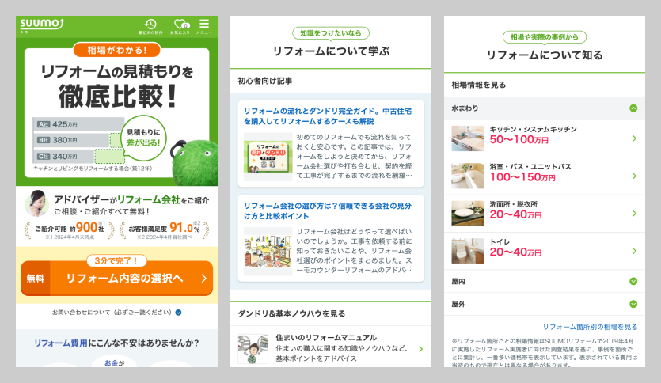

SUUMO SP全体のガイドラインリニューアルプロジェクトにおいて、他領域に先立って行った案件です。
賃貸・マンションなど他領域のデザイナーと会議しながら、アイコンやカラー、リストなどのコンポーネントを整理しながら作成しました。

- 制作媒体
- PC・SP
- 制作期間
- 2ヶ月
- 制作人数
- ディレクター2名、デザイナー1名（担当領域）

SUUMO SP全体のガイドラインリニューアルプロジェクトにおいて、他領域に先立って行った案件です。
賃貸・マンションなど他領域のデザイナーと会議しながら、アイコンやカラー、リストなどのコンポーネントを整理しながら作成しました。